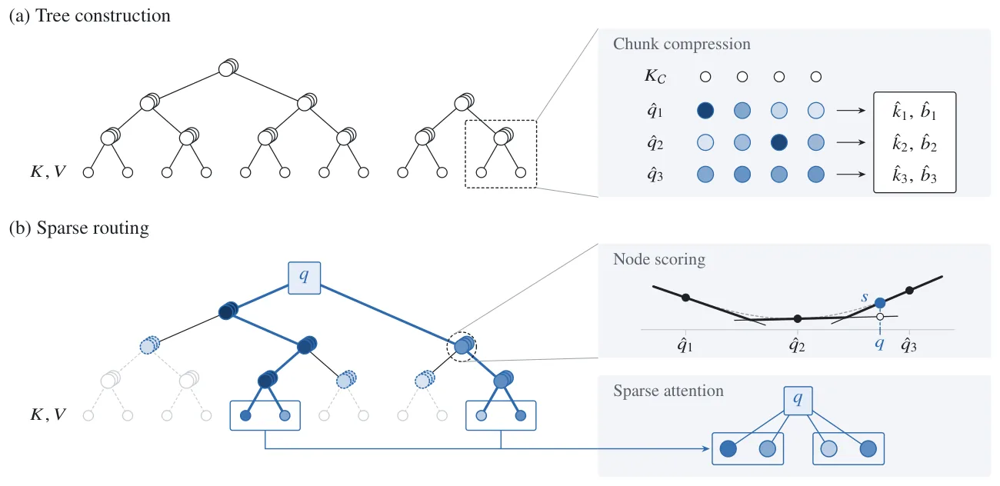
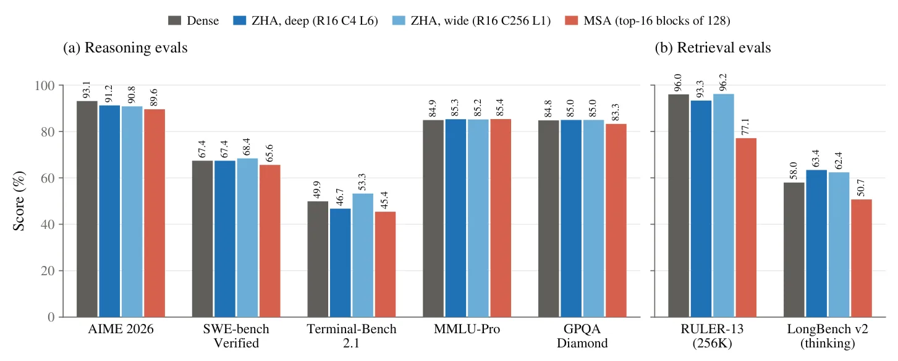
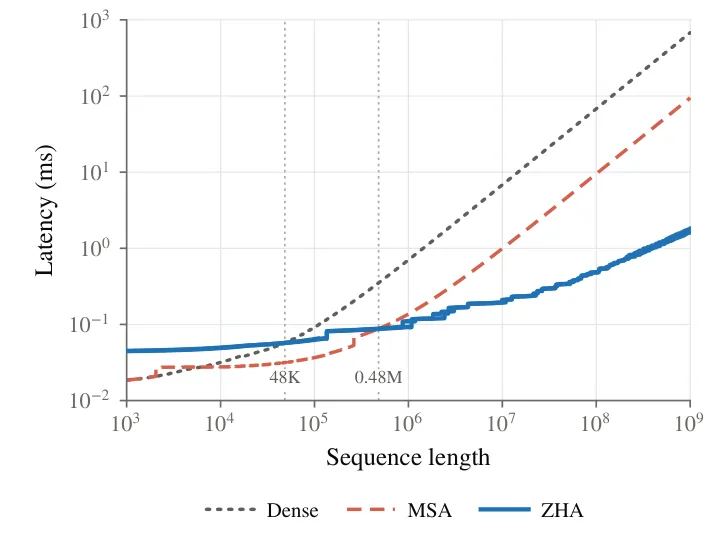

O Gargalo Quadrático da Atenção
A arquitetura Transformer revolucionou o processamento de linguagem natural graças ao mecanismo de atenção, que permite que cada token da sequência interaja com todos os outros. Essa capacidade de mapeamento 'tudo-para-tudo' é fundamental para a expressividade dos grandes modelos de linguagem (LLMs). No entanto, essa mesma propriedade impõe um custo computacional e de memória quadrático em relação ao comprimento da sequência. Durante a fase de pré-filling (prefill), o custo quadrático domina as outras operações, e durante a geração (decode), a necessidade de reler o cache de chaves e valores (KV cache) para cada novo token gera um gargalo de largura de banda e armazenamento que cresce linearmente com o contexto.
Esse gargalo tem proibido o uso eficiente de contextos extremamente longos, apesar da demanda crescente por modelos capazes de raciocinar sobre documentos extensos ou manter memórias de longo prazo. Diversas abordagens foram propostas para contornar essa limitação, mas muitas delas apresentam trade-offs severos. Modelos de espaço de estado (state-space models) e atenção de janela deslizante substituem o cache KV completo por um estado de tamanho fixo. Embora eliminem o custo assintótico quadrático, esse estado fixo satura em contextos longos, resultando em perda de informação e pior desempenho em tarefas que exigem recuperação precisa de detalhes distantes.
Limitações das Abordagens Existentes
Métodos híbridos tentam equilibrar isso, alternando entre atenção densa e misturadores de estado fixo, mas camadas que ainda usam atenção densa dominam o custo em contextos suficientemente longos. Outras estratégias focam na compressão direta da sequência ou na evicção offline do cache KV, removendo tokens considerados irrelevantes. No entanto, essas abordagens frequentemente falham empiricamente porque é praticamente impossível saber antecipadamente, ou em média, se um token específico será útil para uma consulta futura. Isso leva a uma fragilidade onde a compressão pode eliminar informações cruciais sem aviso.
Uma família promissora de métodos são as atenções esparsas finas, que permitem que cada consulta (query) selecione seu próprio subconjunto esparso de chaves e valores do contexto. Métodos como DSA e MSA usam um indexador leve para pontuar a relevância de cada par chave-valor para cada consulta, executando a atenção completa apenas nos pares mais relevantes. A vantagem é a precisão: cada consulta vê o que precisa. O problema é que esse indexador relocou o custo da atenção para a etapa de indexação. Em contextos próximos a 1 milhão de tokens, mesmo com otimizações, o custo do indexador pode se tornar proibitivo, e muitos desses métodos oferecem apenas ganhos de fator constante, escalando mal na prática.
Introduzindo o ZHA: Indexação Hierárquica
Neste artigo, os autores da Zyphra Research apresentam o Zyphra Hierarchical Attention (ZHA), um método de atenção esparsa assintoticamente subquadrático. A ideia central é construir um indexador baseado em uma estrutura de árvore hierárquica sobre o cache KV. Em vez de comparar cada consulta com todas as chaves individuais, o ZHA constrói uma árvore de resumos compressivos das chaves. Durante a fase de pré-filling, o cache KV é dividido em chunks, e para cada chunk, um nó de chave comprimido é criado no nível superior da árvore como uma soma ponderada pelas atenções das chaves originais.
Essa estrutura permite que as consultas futuras naveguem da raiz da árvore até as folhas para recuperar um subconjunto esparso de chaves relevantes. A inovação chave do ZHA é que, ao crescer iterativamente a profundidade da árvore conforme o contexto se expande, o custo total, incluindo o roteamento e a atenção final, cresce de forma sublinear em relação ao comprimento da sequência. Isso resulta em uma escalabilidade geral subquadrática (mas superlinear) para a atenção. O método promete ser uma solução escalável para contextos de centenas de milhões ou bilhões de tokens, sem a saturação de estados fixos ou o custo quadrático da atenção densa.

Como o Roteamento Hierárquico Funciona
O mecanismo do ZHA opera em duas fases distintas: construção da árvore e roteamento esparso. Durante a construção, o cache KV é particionado em chunks de tokens contíguos. Para cada chunk, um nó de chave comprimido é gerado no nível superior da hierarquia. Essa compressão não é uma simples média; é uma soma ponderada pelas atenções, computada em relação às próprias chaves do chunk. Isso preserva a informação estrutural mais importante do grupo de tokens.
Durante o decode, quando uma nova consulta chega, ela não compara diretamente com todas as chaves do histórico. Em vez disso, ela inicia a busca na raiz da árvore. A consulta é comparada com os nós de resumo no nível mais alto, e o algoritmo decide quais subárvores são relevantes. Esse processo de roteamento 'top-down' continua até que as folhas (as chaves originais ou chunks finais) sejam selecionadas. Apenas as chaves selecionadas por esse caminho hierárquico participam do cálculo final de atenção. Isso reduz drasticamente o número de comparações necessárias, transformando um problema O(N^2) em um problema muito mais leve, dependendo da geometria da árvore.
Treinamento via Distilação KL
Uma das maiores barreiras para adotar novas arquiteturas de atenção é a necessidade de retreinamento extensivo dos modelos. O ZHA foi projetado para ser aplicado a modelos pré-treinados existentes com um custo mínimo. Os autores demonstram que basta uma fase curta de distilação de conhecimento (KL distillation) sobre alguns bilhões de tokens. Durante essa fase, o modelo original (teacher) gera os pesos de atenção densa padrão, e o novo módulo do ZHA (student) é treinado para imitar essa distribuição de atenção.
Os únicos parâmetros aprendíveis adicionados pelo ZHA são um conjunto de 'reference queries' (consultas de referência) usadas no indexador. Os autores tentaram abordagens mais complexas, como LoRA para essas consultas ou fatoração explícita das probabilidades de atenção, mas descobriram que a simplicidade da distilação KL direta era suficiente e mais eficaz. Esse processo permite que o modelo aprenda a navegar na árvore hierárquica de forma a reproduzir o comportamento de atenção do modelo original, mantendo a precisão sem a necessidade de retreinamento completo do transformer.
Resultados de Desempenho e Robustez
Os experimentos mostram que o ZHA mantém o desempenho em tarefas desafiadoras de recuperação de longo contexto, raciocínio, matemática e codificação agentic. Ao comparar com a atenção densa e outros métodos esparsos como MSA, o ZHA demonstra precisão competitiva. A robustez do método é particularmente notável em relação à geometria da árvore. O ZHA funciona bem tanto com árvores mais profundas (maior hierarquia) quanto mais largas (chunks maiores), indicando que a estrutura hierárquica é flexível o suficiente para se adaptar a diferentes configurações de hardware e requisitos de latência.
Em avaliações específicas, o ZHA converteu modelos base como o Qwen3.6-35B-A3B mantendo a capacidade de recuperação de informações em contextos extensos. A capacidade de aplicar o método a modelos existentes via distilação curta é um diferencial prático significativo, pois reduz a barreira de entrada para adotar técnicas de atenção subquadrática. Os autores observaram que o desempenho do ZHA tende a melhorar com o aumento da escala do modelo, sendo mais estável em modelos de 4B parâmetros ou mais, onde os pesos de atenção originais são menos ruidosos, facilitando o processo de distilação.

Escalabilidade Subquadrática e Latência
O principal argumento teórico e empírico do ZHA é sua escalabilidade. Enquanto a atenção densa escala quadraticamente e métodos esparsos baseados em indexadores simples podem ter custos de indexação quadráticos ou lineares altos, o ZHA escala subquadraticamente. Modelos de latência (roofline models) desenvolvidos pelos autores mostram que, para um nível fixo de esparsidade (top-p), o tempo de decode do ZHA cresce muito mais lentamente que o da atenção densa conforme o contexto se aproxima de 1 milhão de tokens ou mais.
Isso significa que, em contextos muito longos, o ZHA não apenas é mais rápido, mas potencialmente viabiliza tarefas que seriam impossíveis devido a limites de memória ou tempo de inferência. A escalabilidade subquadrática é atingida porque o custo de roteamento na árvore é proporcional ao logaritmo ou raiz quadrada do contexto, dependendo da geometria, enquanto o custo da atenção final é proporcional ao número de chaves selecionadas, que também é controlado pela esparsidade. Isso contrasta com a atenção densa, onde o custo da atenção final é linear no tamanho do cache, mas o custo de indexação é zero, e com métodos que indexam tudo, onde o custo de indexação é alto.

Limitações e Degradação em Esparsidade Extrema
Apesar dos resultados promissores, o paper reconhece limitações importantes. Empiricamente, o ZHA performa muito bem para contextos até 256K tokens. No entanto, em níveis cada vez maiores de esparsidade, o desempenho começa a degradar. Isso ocorre porque, à medida que a árvore se torna mais profunda ou a esparsidade mais agressiva, a quantidade de informação retida nas chaves selecionadas diminui, potencialmente perdendo nuances contextuais críticas. A degradação sugere que há um limite prático para quão esparsa a atenção pode ser sem comprometer a inteligência do modelo, especialmente em tarefas que exigem raciocínio complexo.
Além disso, a eficácia do ZHA depende da geometria da árvore. Embora robusta a variações, a escolha de parâmetros como o número de níveis (L) e o tamanho dos chunks (C) requer ajuste. O paper não valida empiricamente a escalabilidade para contextos de centenas de milhões de tokens, embora o modelo teórico sugira que seria possível. Os experimentos atuais são limitados em escala de contexto, deixando em aberto como o método se comportaria em regimes de 'needle-in-a-haystack' extremos ou em tarefas de agregação de conhecimento massivo.
Direções Futuras e Conclusão
Os autores apontam várias melhorias potenciais para o algoritmo ZHA. Uma delas é aprender dinamicamente os limites dos chunks em vez de defini-los arbitrariamente, o que poderia adaptar a árvore à estrutura natural dos dados. Outra ideia é introduzir um viés de recência na árvore, tornando-a mais detalhada perto do token atual e mais resumida em partes antigas, refletindo a importância temporal variável. Também é possível ajustar os parâmetros do modelo base durante o fine-tuning com conjuntos de treinamento de longo contexto, permitindo que o resto do transformer compense a degradação causada pela esparsidade.
Outra linha de pesquisa envolve augmentar a árvore com resumos compressivos dos valores (value summaries), permitindo que nós podados durante o roteamento contribuam com saídas de atenção grosseiras. Isso preservaria uma visibilidade aproximada sobre todo o cache KV, combinando atenção de nível de token nas regiões selecionadas com contribuições de nível de resumo das subárvores podadas. Em resumo, o ZHA representa um passo significativo em direção a LLMs com janelas de contexto efetivas de bilhões de tokens, oferecendo uma alternativa viável à atenção quadrática, embora ainda haja trabalho a ser feito para garantir robustez em esparsidades extremas e contextos ultra-longos.
O que fica
- ZHA usa uma árvore hierárquica de resumos compressivos para reduzir o custo da atenção de quadrático para subquadrático, permitindo contextos muito longos.
- O método pode ser aplicado a modelos pré-treinados existentes com apenas uma fase curta de distilação KL, sem necessidade de retreinamento completo.
- Embora robusto, o desempenho do ZHA degrada em níveis extremos de esparsidade, limitando sua eficácia em contextos ultra-longos além de 256K nos testes atuais.
- A escalabilidade subquadrática do ZHA promete viabilizar janelas de contexto de centenas de milhões ou bilhões de tokens em LLMs futuros.
Paper original: Subquadratic Attention with a Hierarchical Tree-Structured Indexer
Comentários
Nenhum comentário ainda. Seja o primeiro.